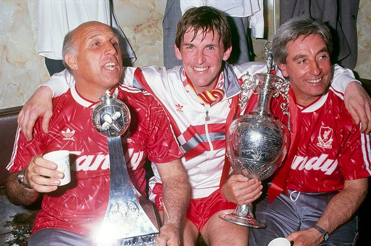
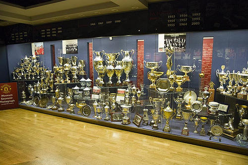

Between the start of the premier league and beginning of the 1990s, Liverpool dominated the English premier league and won 18 premier league titles.
Right after this, they faced a 27 year drought. They came close a couple of times, but they never won again. Their fans were desperate, the glory days were over.

BUT THEN! the cyclic nature of the game and the good and generous new owners brough hope in the form of a new manager Jurgen Klopp

He ended the drought and brought Liverpool a new premier league title after 27 years!

But despite Liverpool not having enjoyed a premier league title for a while, they had countless success in other competitions. They had a great love affair with the Champions League title, which is the European competition among the biggest club. And Liverpool had won that 5 times. In addition they enjoyed a lot of domestic cup success. Jurgen Kloop won them the 6th Champions League title, and added even more domestic and international cup to their trophy cabinets.


After all those successes, They became the most successful club in England beating their rivals Manchester United!
